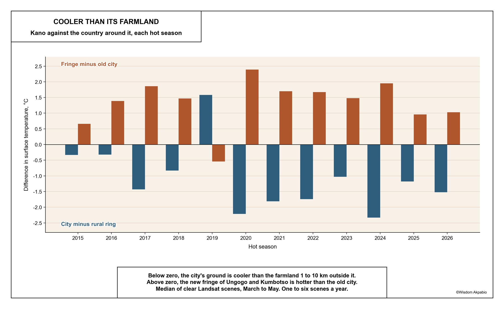
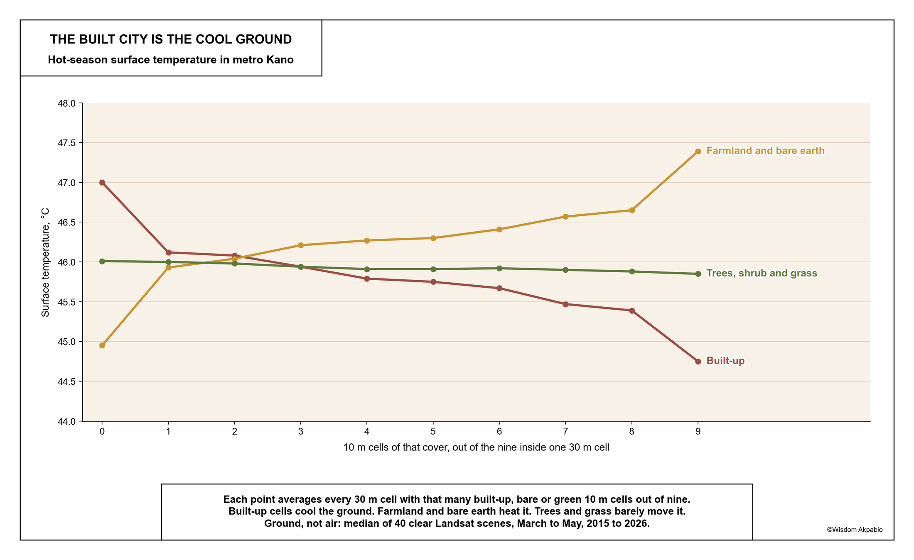
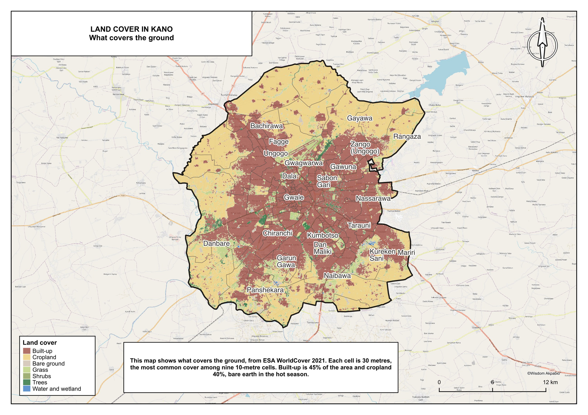
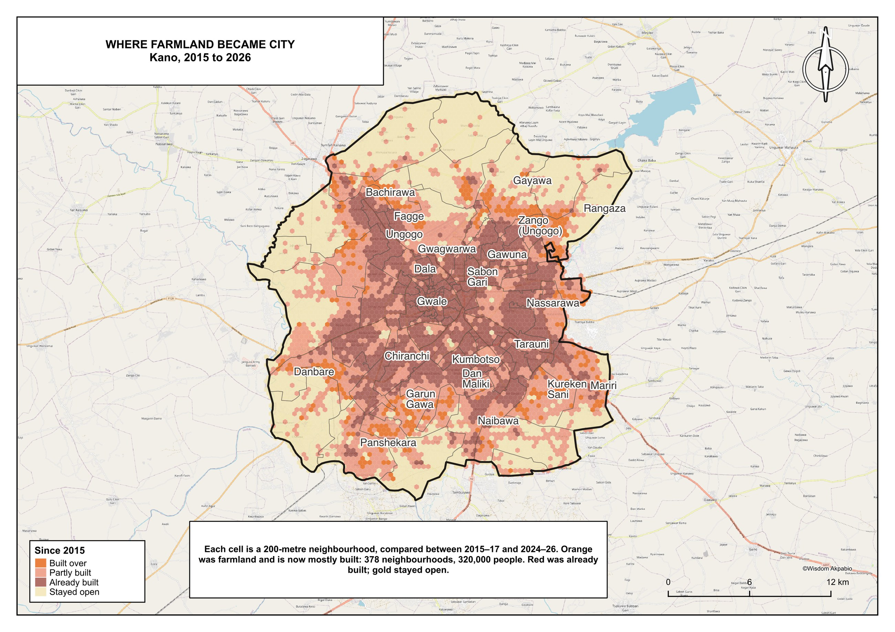

Glossary
- Land surface temperature (LST)
- How hot the ground, roof or canopy is, measured from orbit. Not the air temperature people feel.
- Rural ring
- Land 1 to 10 km outside the study outline, used as the reference for the city.
- Surface cool island
- A city whose surface is cooler than its surroundings. Kano is one by day in the dry seasons and a heat island by night.
- Old city and fringe
- Old city: Kano Municipal, Dala, Gwale, Fagge, Nassarawa and Tarauni. Fringe: Ungogo and Kumbotso.
- Composition class
- The anchor paper’s twelve labels (C1 to C12) for the mix of built-up, bare, green and water 10 m cells inside one 30 m pixel.
- NDVI, NDBI, MNDWI, bare-soil index
- Spectral indices for greenness, built-up surface, water and moisture, and bare soil.
- MODIS composite
- An 8-day average of clear-sky surface temperature at 1 km, from the Terra (about 10:30 and 22:30) or Aqua (about 13:30 and 01:30) satellite.
- UTFVI
- Urban thermal field variance index: each pixel’s LST relative to the city mean. On the standard scale in kelvin, 1.7% of Kano is “strong” or worse (Bangalore reports 76% unfavourable). The index is relative to each city’s own mean, so shares do not compare across cities.
- Walk time (PTk)
- Walking time, in minutes at 5 km/h, to the five nearest clinics and the five nearest schools, averaged. From Fifteen minutes on foot.
1. Question and anchor
Ramachandra, Rana, Vinay and Aithal (2025) link land surface temperature to the land-use mix inside each 30 m Landsat pixel in Bangalore, using one April 2022 scene, a 10 m Sentinel-2 land-use map and four spectral indices. They find bare soil and urban pixels hottest (39.9 and 39.7 °C), vegetation and water coolest, and recommend at least 30% vegetation per plot.
This paper asks the same question of Kano, a semi-arid Sahelian city ringed by dry-season farmland, and adds what the anchor lacks: many dates, night-time passes, land cover for every year, people, wards and walking time. It is an adaptation; every departure is listed in the repository’s metric trace.
2. Data and method
Study area. Kano metropolitan area: eight local government areas, 573 km², 5.78 million people (GRID3 NGA v3.0, scaled to July 2025). The outline, wards, 200 m hexagons and named settlements are shared with Fifteen minutes on foot. A ring 1 to 10 km outside the outline is the rural reference.
Surface temperature. Landsat 8 and 9 Collection 2 Level-2 surface temperature (USGS single-channel algorithm, atmospherically corrected, ASTER emissivity), from Microsoft Planetary Computer. Of 1,160 scenes searched, 142 cover at least 98% of the outline with at least 98% of those pixels clear in the QA band; one footprint (WRS-2 path 188, row 52) covers the whole city. The hot season is March to May: 40 scenes, one to six a year. Each year’s surface is the per-pixel median of its scenes; the pooled surface is the median of the twelve yearly medians.
Land-use mix. ESA WorldCover 10 m (2021), warped onto a 10 m grid that nests exactly three by three inside the 30 m LST grid, and collapsed to the anchor’s four groups: built-up, bare, vegetation, water. Dry-season cropland is bare earth to a thermal sensor, so the analysis is run twice: cropland as vegetation (the anchor’s rule) and cropland as bare. The anchor’s twelve composition classes overlap and leave gaps; we assign them in a fixed order and report the unassigned share. Because the table is ambiguous, the main land-use result is a gradient that needs no classes.
Spectral indices. NDVI, NDBI, MNDWI and the bare-soil index from the same scenes, medians per season. As in the anchor: 1,000 random pixels, simple correlations and a four-index linear model. Added: the same model on all 636,483 pixels, variance inflation factors and Moran’s I of the residuals.
Land cover for every year. WorldCover is a single 2021 map. For each year from 2015 to 2026 we classify our own land cover from the same clear Landsat scenes: hot-season and wet-season reflectance composites (six bands each) with NDVI, NDBI, MNDWI and the bare-soil index, because dry-season farmland is bare in March and green in August. A random forest is trained on 30 m cells whose nine WorldCover cells agree in both 2020 and 2021 (six classes: built-up, cropland, bare ground, grass and shrub, trees, water). Spatially blocked cross-validation gives 85.6% overall accuracy (kappa 0.83); built-up F1 0.87, grass and shrub weakest at 0.71. Class probabilities are averaged over three years, which fills cloud gaps and damps one-year flips. Impact Observatory’s annual 10 m maps (Sentinel-2, 2017 to 2023) are the independent check.
Day and night. Landsat sees Kano only at about 10:30. MODIS MOD11A2 (Terra, about 10:30 and 22:30) and MYD11A2 (Aqua, about 13:30 and 01:30) 8-day clear-sky composites at 1 km, 2015 to 2026, all seasons, give four times of day. They are warped onto a 1 km version of the same grid, outline, ring and old-city/fringe split; a composite counts only when at least 80% of both city and ring pixels are valid. 1,022 composites.
People and walking. Hexagon population from GRID3 v3.0; under-5, over-65 and women 15 to 49 from the v3.0 age-sex layers. Each hexagon carries its walking time to five clinics and five schools from the walking paper.
3. Results
3.1 A city cooler than its fields
| Scenes | City cooler than ring | Median city minus ring | Fringe hotter than old city | Median fringe minus old city | |
|---|---|---|---|---|---|
| March and April | 28 | 28 | −1.6 °C | 28 | +1.75 °C |
| May | 12 | 9 | −1.0 °C | 10 | +1.3 °C |
| All hot season | 40 | 37 | −1.5 °C | 38 | +1.6 °C |
The three scenes where the city is warmer than its ring are 1 May 2018 (+0.05 °C), 4 May 2019 (+4.3 °C) and 28 May 2025 (+1.7 °C). On 4 May 2019 the ring fell to 42.4 °C while the city held 46.7 °C, the signature of wet fields after an early storm. That one scene carries the only positive yearly median in the series (Figure 1).

Across the pooled surface, local government medians run from Kano Municipal (44.0 °C) and Gwale (44.2) to Fagge (45.8) and Ungogo (46.9). Hot spots (above the city mean plus two standard deviations, 49.8 °C) cover 1.7 km², and 1,854 of their 1,922 pixels are cropland or grass, not buildings: Fanisau, Rangaza and Karo in Ungogo, and Kwachiri in Fagge, the ward that contains Mallam Aminu Kano International Airport and its runway. Cold spots (below 42.2 °C) cover 14.3 km², along the Challawa river and the dense southern wards of Panshekara, Naibawa, Dorayi and Kumbotso (Plate 1).
3.2 What covers the hot ground
| Composition class | Bangalore | Kano, cropland as vegetation | Kano, cropland as bare |
|---|---|---|---|
| C1, all bare | 39.92 °C | 44.67 °C (0.7%) | 47.39 °C (34.5%) |
| C2, all built-up | 39.74 °C | 44.75 °C (38.0%) | 44.75 °C (38.0%) |
| C11, all vegetation | cool | 47.11 °C (47.2%) | 45.85 °C (6.5%) |
| C12, all water | coolest | 39.08 °C (0.05%) | 39.08 °C (0.05%) |
| Unassigned | not reported | 4.0% | 5.5% |
Read the anchor’s way, Kano’s all-vegetation pixels are its hottest ground, because most of what WorldCover calls vegetation is cropland that is bare in March. Read the Sahel’s way, bare ground is hottest, as in Bangalore, but pure built-up pixels are still 1.1 °C cooler than the remaining trees, shrub and grass, and 2.6 °C cooler than bare fields. Only open water is cooler than the built city.
Built-up covers 45% of the metropolitan area in WorldCover, cropland 40%, grass 10% and trees 2% (Plate 2). Set beside Plate 1, the dull-red built-up core is the cool blue and the gold cropland ring is the hot red. The gradient in Figure 2 shows the same thing without classes.

3.3 Greenness does not predict heat here
| NDVI | NDBI | MNDWI | Bare-soil index | |
|---|---|---|---|---|
| Bangalore (anchor) | −0.46 | +0.69 | −0.23 | +0.65 |
| Kano, pooled hot season | +0.15 | +0.48 | −0.62 | +0.53 |
| Kano, range over 12 years | −0.04 to +0.20 | +0.26 to +0.52 | −0.21 to −0.64 | +0.23 to +0.58 |
Moisture, not greenness, tracks the cool ground: the water index is the strongest single correlate in every year. The anchor’s four-index equation does not transfer. The indices are collinear (variance inflation up to 34), the fitted coefficients change sign between years (the bare-soil term runs from +12 to −87), the model explains about half the variance (R² 0.50 pooled) and its residuals are strongly clustered in space (Moran’s I 0.30 to 0.67). We report the simple correlations and not the model.
3.4 Who lives on the hot ground
| People | Under 5 | Over 65 | |
|---|---|---|---|
| Whole city | 5,780,865 | ||
| Hottest tenth of populated hexagons (≥ 47.7 °C) | 122,404 (2.1%) | 20,529 | 2,675 |
| Coolest tenth (≤ 43.6 °C) | 616,189 (10.7%) | 104,972 | 13,676 |
| Hottest fifth (≥ 47.1 °C) and more than 15 minutes’ walk | 260,964 | 42,467 | |
| Hottest fifth and within 15 minutes’ walk | 14,873 | 2,362 |
People live on the cooler ground: the population-weighted surface temperature is 45.0 °C, a full degree below the average hexagon (46.0 °C). The heat that does reach homes sits on the farmland edge, and almost everyone there is also far from services. Of the 276,000 people on the hottest fifth of populated ground, 95% are more than 15 minutes’ walk from five clinics and five schools; only 25 of those 831 hexagons are within a 15-minute walk (Plate 3). Across the city, hotter hexagons are farther from services (population-weighted r = 0.36).
The GRID3 age-sex layers apply one age structure across the city: under-fives are 16.5 to 16.7% of every local government area and over-65s 2.2%. They convert people into counts of children and elders, but they cannot show whether children live on hotter ground than adults. We give counts and never an age-weighted temperature.
| Ward | LGA | People | Surface | Walk | Largest named place |
|---|---|---|---|---|---|
| Karo | Ungogo | 20,919 | 47.9 °C | 31 min | Muncika Kudu |
| Yada Kunya | Ungogo | 51,646 | 47.4 °C | 25 min | Layin Kasuwa |
| Chalawa | Kumbotso | 39,604 | 47.1 °C | 36 min | Kusuba Kwari |
| Rangaza | Ungogo | 114,696 | 46.9 °C | 21 min | Layin Masallacin Juma’a |
| Fanisau | Ungogo | 48,494 | 46.1 °C | 23 min | Kan Fako |
| Dan Maliki | Kumbotso | 264,515 | 43.9 °C | 11 min | Gidan Leda |
| Daurawa | Tarauni | 17,024 | 43.8 °C | 8 min | Layin Barwa |
Kumbotso is not uniformly hot. Its dense inner wards, Dan Maliki and Naibawa, are among the coolest ground in the city. The heat is where farmland still meets new building.
3.5 Cool by day, warm by night
| Season | 10:30 | 13:30 | 22:30 | 01:30 |
|---|---|---|---|---|
| Hot, March to May | −0.33 (74%) | −0.38 (74%) | +1.39 (5%) | +1.14 (9%) |
| Harmattan, November to February | +0.04 (44%) | −0.40 (75%) | +1.90 (0%) | +1.88 (1%) |
| Wet, June to September | +1.49 (6%) | +1.31 (13%) | +0.10 (31%) | +0.10 (34%) |
In both dry seasons the city is the cooler ground by day and the warmer ground by night. Bare fields lose their heat quickly after sunset; walls, roofs and paving give theirs back slowly. The same flip shows inside the outline: in the hot season the fringe is 0.1 to 0.3 °C hotter than the old city by day and 1.7 to 1.8 °C cooler at night, cooler in 99% of night composites. In the wet season the fields are green and wet, and the city is warmer by day (1.3 to 1.5 °C) and roughly level at night: the textbook heat island, for four months of the year.

MODIS agrees with Landsat on the sign of the daytime contrast but gives a smaller value (−0.3 against −1.6 °C). A 1 km pixel mixes compounds, fields and villages that Landsat separates at 30 m, and an 8-day composite averages several days and viewing angles. We quote Landsat for the daytime size and MODIS for the day-night flip.
Plate 3 is a daytime map. At night the ranking of places reverses: the dense wards that are coolest at 10:30 are the warmest at 01:30, and the hot-and-far fringe cools fastest.
3.6 Building on farmland cools the ground by day
Built-up land grew from 38% of the metropolitan area in 2015 to 52% in 2026 on our smoothed maps. Impact Observatory puts it at 47% in 2017 and 59% in 2023: higher, but moving the same way. We quote growth as a range backed by both.
For each hexagon we compare 2015–17 with 2024–26. Heat is the hexagon’s hot-season surface temperature minus that year’s rural-ring median, so a hot or cool year does not pass for change. The fair comparison is farmland that was built over against farmland that stayed open.
| Land cover used | Period | Built-over hexagons | Built-up then → now | Built over minus stayed open |
|---|---|---|---|---|
| Impact Observatory (Sentinel-2, independent) | 2017–18 → 2022–23 | 417 | 6% → 83% | −0.3 °C (median −0.6) |
| Ours (Landsat) | 2017–18 → 2022–23 | 117 | 15% → 67% | −1.5 °C (median −1.6) |
| Ours (Landsat) | 2015–17 → 2024–26 | 378 | 13% → 72% | −1.4 °C (median −1.5) |
Farmland that became city cooled by day relative to farmland that stayed open, whichever land cover is used. The size depends on it. Our Landsat classes and the heat come from the same scenes, and on the same years our maps flag far fewer hexagons than Impact Observatory, the ones whose Landsat signal changed most; that inflates the effect. The independent figure, 0.3 to 0.6 °C, is the one to quote, with ours as an upper bound. Plate 4 shows where: Gayawa, Rangaza, Kadawa and Tudun Fulani in Ungogo; Garun Gawa, Kureken Sani, Danbare and Mariri in Kumbotso. The 378 built-over neighbourhoods on our maps are home to 320,000 people today.
Read with section 3.5, this is a daytime result. The same walls that cool the fringe at 10:30 are the ones that keep the old city warm at 01:30.
4. Discussion
Kano behaves like other dry cities: by day in the dry season its built fabric is cooler than the bare fields around it, and by night it is warmer. Earth and cement compounds, narrow shaded lanes, courtyard trees and irrigated gardens along the rivers keep the daytime surface below that of open, sunlit, dry soil; the same walls and roofs store that heat and release it after dark. The anchor’s advice, more vegetation per plot, is right for Bangalore and weak for Kano in March: what cools here by day is shade and moisture, not greenness as a satellite measures it.
Two findings matter for planning, and they point at different places. By day it is the edge. Kano’s growth in Ungogo and Kumbotso is building onto the hottest daytime ground in the metropolitan area, and the people already there are the ones farthest from clinics and schools. The walking paper found the later population living in Ungogo and Kumbotso while services stayed in the old city; this paper adds that the same families are on the hottest ground at midday. By night it is the old city. The dense wards that shelter people at 10:30 hold the most heat at 01:30, in the months when nights matter most for rest. Neither is visible from a single morning scene, which is what the anchor relied on.
5. Limits
- Land surface temperature is not air temperature or heat stress. There is no humidity or wind here, and the night-time signal is at 1 km from MODIS, not at the 30 m of the daytime maps.
- The composition analysis uses WorldCover 2021. The yearly land cover is our own classification (85.6% on pure, stable cells, lower on mixed edge pixels) and shares scenes with the heat, so the change effect is quoted from the independent Impact Observatory maps.
- WorldCover’s vegetation and cropland classes are not a field survey, and the anchor’s composition table is ambiguous; the gradient is the robust version.
- Population and age-sex rasters are modelled, not counted, and the age structure is uniform across the city.
- Scene counts vary from one to six a year, so year-to-year absolute temperatures reflect which days were clear. Only contrasts within a date are compared across years.




References
Akpabio, W. (2026). Fifteen minutes on foot: walking to clinics and schools in Lagos, Kano, Ibadan, Abuja and Port Harcourt. https://whizialfa.github.io/15-min-cities-nigeria/
GRID3 (2025). Nigeria gridded population estimates v3.0 and age-sex structures.
Karra, K. et al. (2021). Global land use / land cover with Sentinel-2 and deep learning. IGARSS 2021 (Impact Observatory annual LULC, v02).
Ramachandra, T. V., Rana, R. S., Vinay, S. & Aithal, B. H. (2025). Urban heat island linkages with the landscape morphology. Scientific Reports 15, 24485. https://doi.org/10.1038/s41598-025-09141-5
U.S. Geological Survey. Landsat 8–9 Collection 2 Level-2 Science Products.
Wan, Z., Hook, S. & Hulley, G. (2021). MODIS/Terra and MODIS/Aqua Land Surface Temperature/Emissivity 8-Day L3 Global 1 km SIN Grid V061 (MOD11A2, MYD11A2). NASA EOSDIS Land Processes DAAC.
Zanaga, D. et al. (2022). ESA WorldCover 10 m 2021 v200. https://doi.org/10.5281/zenodo.7254221